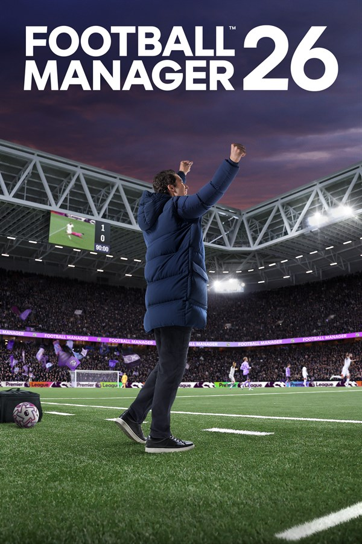

Football Manager 26
Every archived year-end list appearance, including placement and points earned.
About the Game
OUT NOW – PLAY TODAYNew foundations set the stage for you to define your football destiny. Made with the Unity engine, FM26 is the legacy, redefined and where storytelling evolves. A reimagined interface and more immersive match day experience brings you closer to the action and combine to elevate every match-defining moment. Transform your squad with advanced transfer tools and craft your footballing philosophy like never before with new innovations that deliver unrivalled game-changing tactical realism. OUR RICHEST MATCH DAY EXPERIENCE Savour the richest Match Day experience in series history, bringing new levels of depth and drama to every match with enhanced player movement and greater on-pitch detail. Feel the adrenaline of a weaving run, inch-perfect through ball and unforgettable, last-gasp title winner with more personality thanks to fresh motion capture and volumetric animations.THE PREMIER LEAGUE JOINS THE ACTION Compete at the pinnacle of English football as the Premier League debuts with fully-licensed club badges, kits and official player photos. Authenticity reaches new heights as you pursue the biggest prize in domestic football with the full broadcast experience from the best seat in the house. ADVANCED TACTICAL INNOVATIONExercise unparalleled control over how your team plays across every area of the pitch with the introduction of distinct In and Out of Possession formations.Redefined player roles and a dynamic visualiser that shows how your team shapes up in different scenarios levels up your pre-match prep game in, game out.TOTAL FOOTBALL, TOTAL CONTROL An overhauled UI primed for the modern manager offers a cleaner look-and-feel, with the new Portal bringing together every aspect of your footballing world.. Tailor your game to your priorities with the introduction of quick link Bookmarks and learn more about the beautiful game with an overhauled Search and new FMPedia glossary. INTRODUCING: WOMEN’S FOOTBALL Explore a new world of possibilities as the women’s game debuts, seamlessly integrated into FM as one footballing world. With 14 playable leagues from 11 nations, including the Women’s Super League and National Women’s Soccer League, there are fresh challenges and new talents to discover in each career.TRANSFORMATIVE TRANSFER TOOLSHarness the power of TransferRoom™ to smartly shape your title-winning squads season after season.Broadcast your recruitment priorities with Requirements and gain direct insight into your rivals’ needs with Pitch Opportunities, giving you more targeted control over every signing and sale.YOUR MANAGER, YOUR WAYExpress more of your personality and style in every career with a revamped manager creation experience. Craft your look with an enhanced character creator before developing a career backstory that’s unique to you and uniquely influential on your life in the dugout.In FM26, football belongs to you and your vision. It’s your time to change the game.
| Released | 2025-11-04 |
|---|---|
| Developer | Sports Interactive |
| Publisher | SEGA |
| Genres | Strategy, Simulation, Sports |
| Platforms | macOS, PC |
SingleplayerSteam AchievementsMultiplayerFull controller supportSteam CloudHorrorSteam WorkshopManagementFamily SharingPlayable without Timed InputSave AnytimeAdjustable Text Size
Where to Buy
Game information provided by RAWG.
Points by Year
List History
| Year | Source | List | Placement | Points |
|---|---|---|---|---|
| 2025 | Forbes | The 20 Best Games Of 2025 | 15 | 3 |